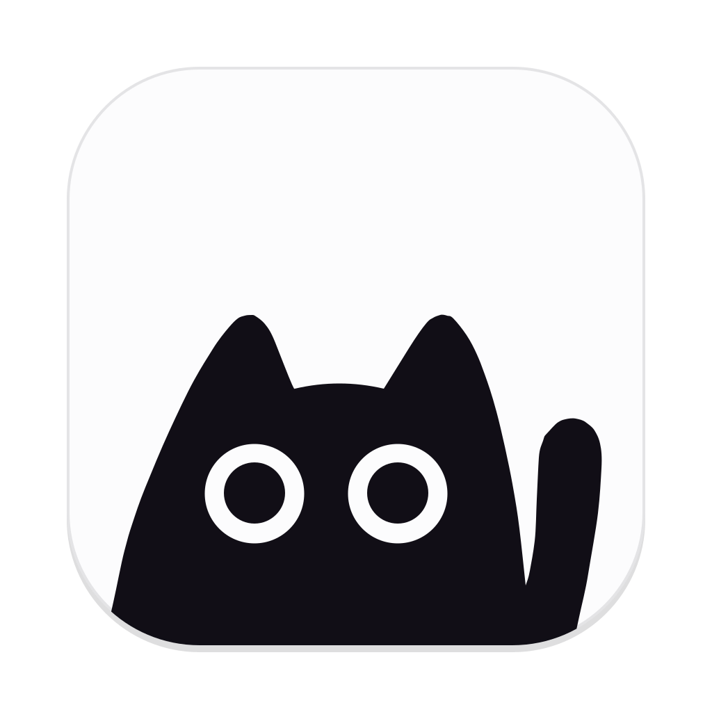

업무 달력
마감일이나 회의를 누르면 Notion 원본이 열립니다.

Maeng Mate마감일이나 회의를 누르면 Notion 원본이 열립니다.
설정한 근무 규칙에 따라 퇴근 예정 시각을 계산합니다. 지난 기록도 날짜별로 수정할 수 있습니다.
카테고리별로 알림 조건을 정하고, Mac 알림과 Slack DM 중 받을 곳을 고르세요.
읽기 전용 MCP로 내 업무와 회의 일정을 조회합니다.
현재 버전은 Apple 공증을 받지 않았습니다. DMG와 체크섬은 공식 릴리스에서 확인하세요. Apple의 보안 경고 안내